hello,
A venture capital strategist, curious generalist, and enthusiastic instigator of unusual ideas. I work at the intersection of technology, creativity, and human connection, with a particular interest in how we build a future worth being excited about.
By day, I help ambitious ideas find their footing. By night, I'm usually building something strange, gathering interesting people, or conducting highly unscientific experiments in being alive.
Resume
Download PDFNov 2025 to now Head of Platform & Development · ACME Capital
- Lead investor relations and fundraising communications with firm leadership: investor materials, LP engagement, ongoing relationships.
- Oversee CRM strategy and operations, including data quality, relationship tracking, reporting and internal visibility.
- Evaluate software vendors and tools, including investor portals.
- Represent ACME at industry events and build relationships for deal sourcing, fundraising and partnerships.
- Plan and run the annual investor meeting, founder gatherings and ecosystem events.
- Work with leadership on fundraising, investing and organizational projects.
Sep 2023 to Nov 2025 Platform Manager · ACME Capital
- Administered the firm's Affinity CRM: data management, team training, custom views, dashboards.
- Built investor presentations and fundraising materials with the Managing Partner.
- Automated workflows for contact data and engagement tracking.
- Ran investor and portfolio events.
- Set up onboarding and knowledge management for portfolio companies and the team.
Feb 2021 to Sep 2023 Program Manager · Atomic Venture Studio
- Designed and launched programs for founders and the venture community.
- Built onboarding, communications and knowledge management processes across multiple companies.
- Ran an internship program with 3,000+ applicants a year.
- Built feedback and reporting systems to track how programs were doing.
Apr 2021 to Mar 2022 Chief of Staff to the CEO · BoomPop (concurrent, Atomic portfolio company)
- Worked directly with the CEO on priorities and cross-functional projects.
- Coordinated product, operations, customer experience and brand.
- Supported product research and the launch of a new service.
Feb 2019 to Feb 2021 Program Specialist · Atomic Venture Studio
- Supported program design and operations for founders and the venture community.
- Coordinated onboarding, communications and logistics across portfolio companies.
BA, Liberal Studies, Cum Laude · University of Wisconsin-Whitewater
Personal Projects
A.G.E.N.C.Y.
A civic art piece for the Future of Us Festival, displayed in a physical, futuristic terminal. Visitors compare economic systems, plot their values, and talk to it for a personalized "economic soul type."
HTML · JS · Cloudflare · Claude APIKiki or Bouba?
A birthday party themed activity I built. Visitors vote on whether a word sounds sharp or round, with votes updating in real time.
HTML · JS · SupabaseBureau of Deity Regulation
A fake government portal styled like a 1999 website. Blinking text included.
One HTML fileView GitHub
Claude has helped me bring a lot of digital projects to life.
Art Builds
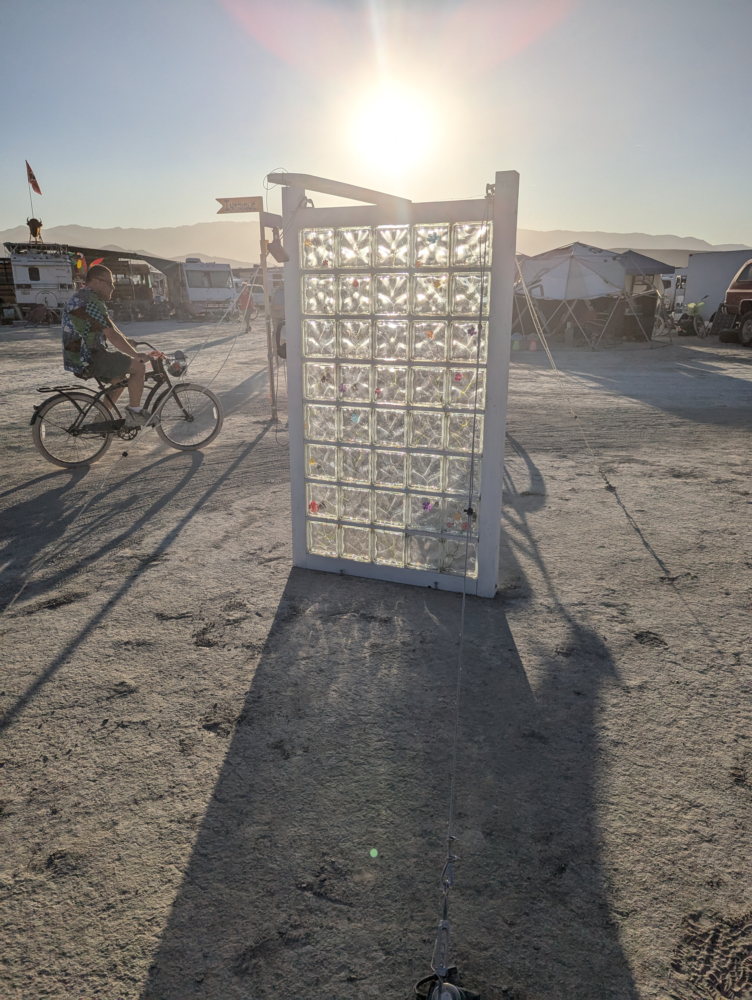
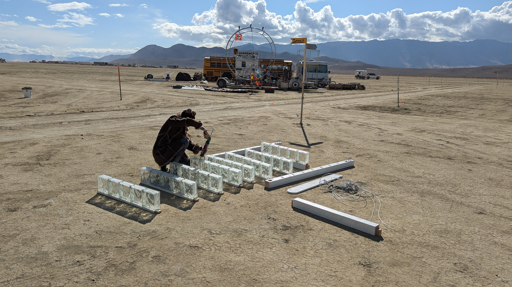
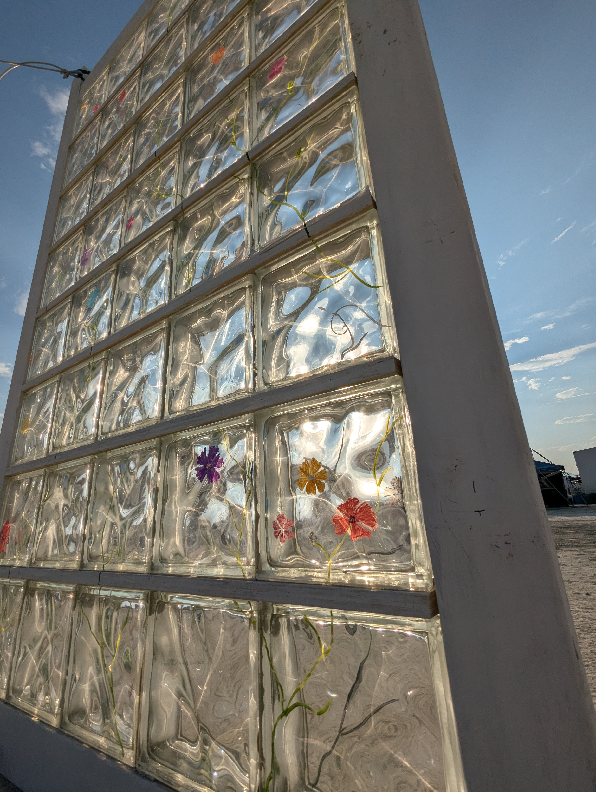
300lb Monolith
My first Burning Man art installation, built from recycled glass shower block and wood. Designed to explore light, dark and non-duality: evening light cast shadow patterns on the ground, and flowers on one side were in color while the other side was black and white.
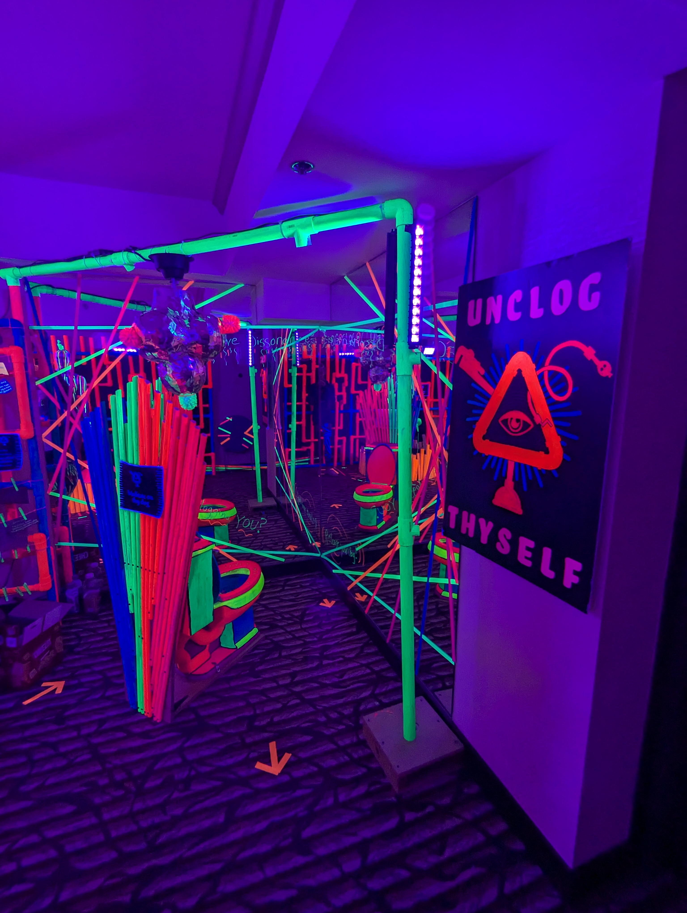
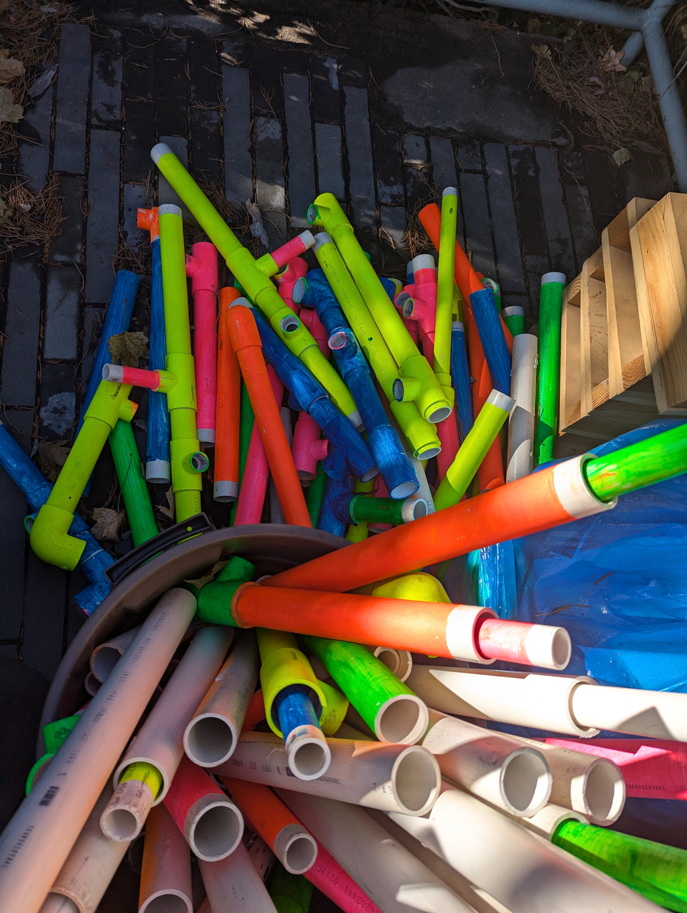
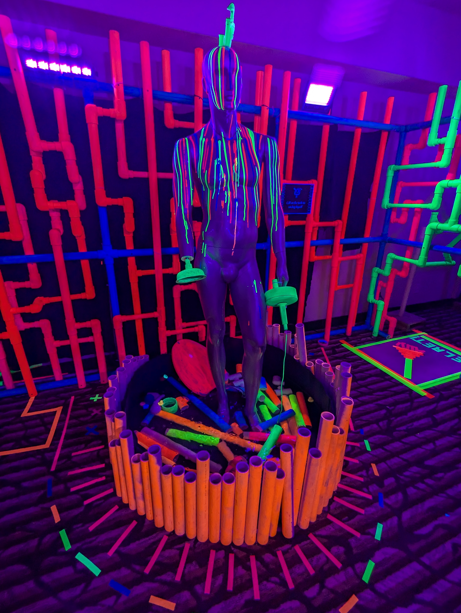
Therapist Plumbers
An immersive, narrative-driven event about processing emotions, where plumbers acted as therapists helping the main character "unclog" their problems. As part of the plumber team, I helped design the game mechanics and build three interactive neon pipe stations, a fountain, and a hidden plumber's office reached by solving a quest and finding a code at each station. Inside, participants could "process their shit" by writing down something to let go of, reflecting in the infinity toilet mirror, and honoring the fountain of John, an ode to plumbers everywhere.
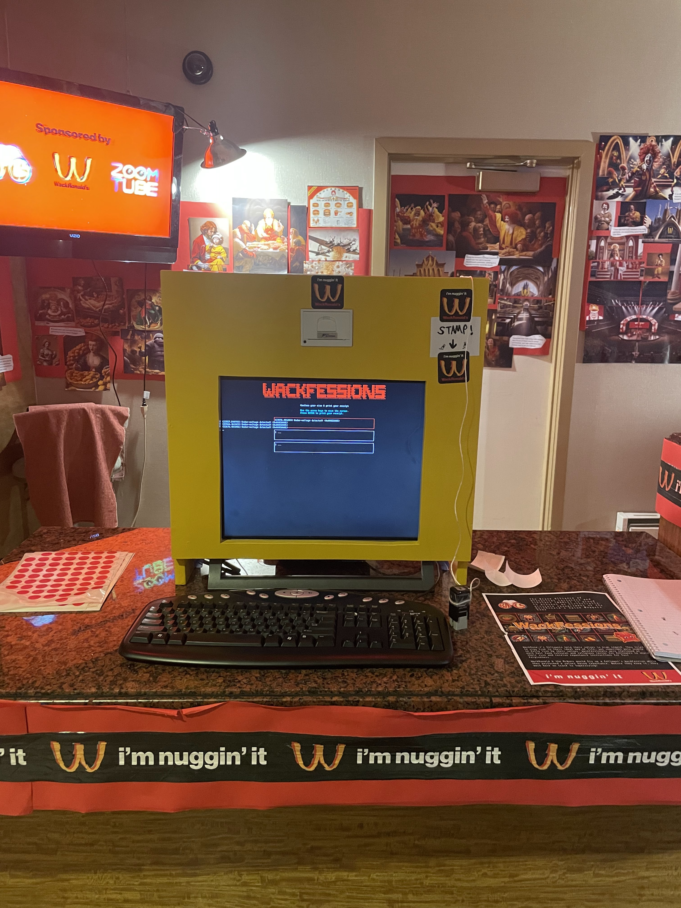
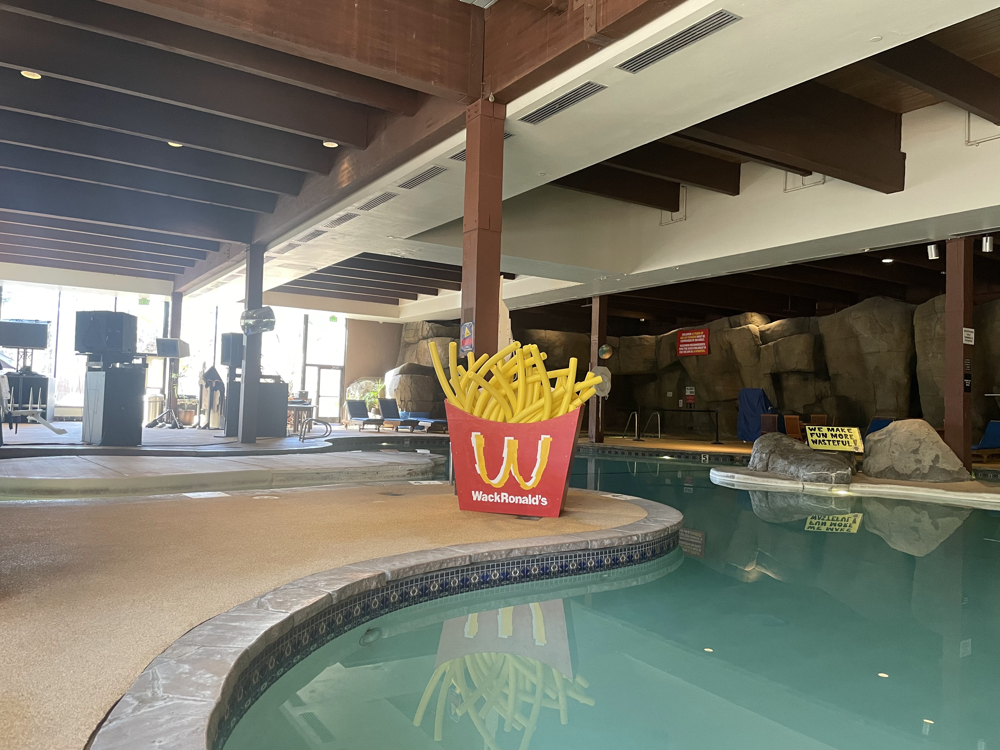
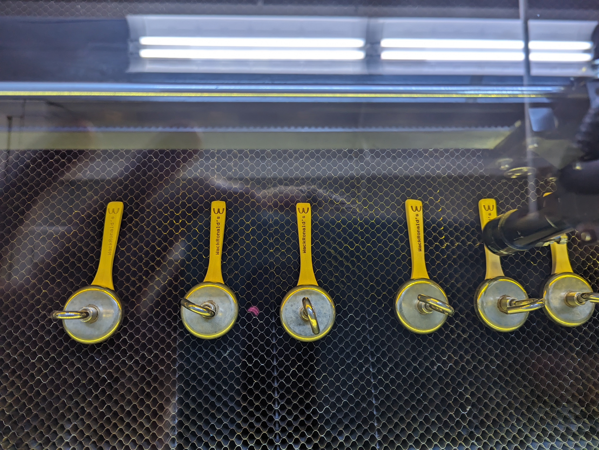
WackRonalds
A thematic retro-future event where historians mistook McDonald's for a historic cultural centerpiece akin to religion. As part of the "historians" team, I helped reimagine WackRonald's history, develop a storyline tying into the main narrative, and build three physical, interactive stations: a pool-noodle fry box, an "ordering kiosk" for confessing your sins, and a "values menu" game. A late-night performance included a ball pit, a giant mouth, a giant spoon, and many of the most faithful followers.
Van Build
A pandemic project. Lots of YouTube learning.
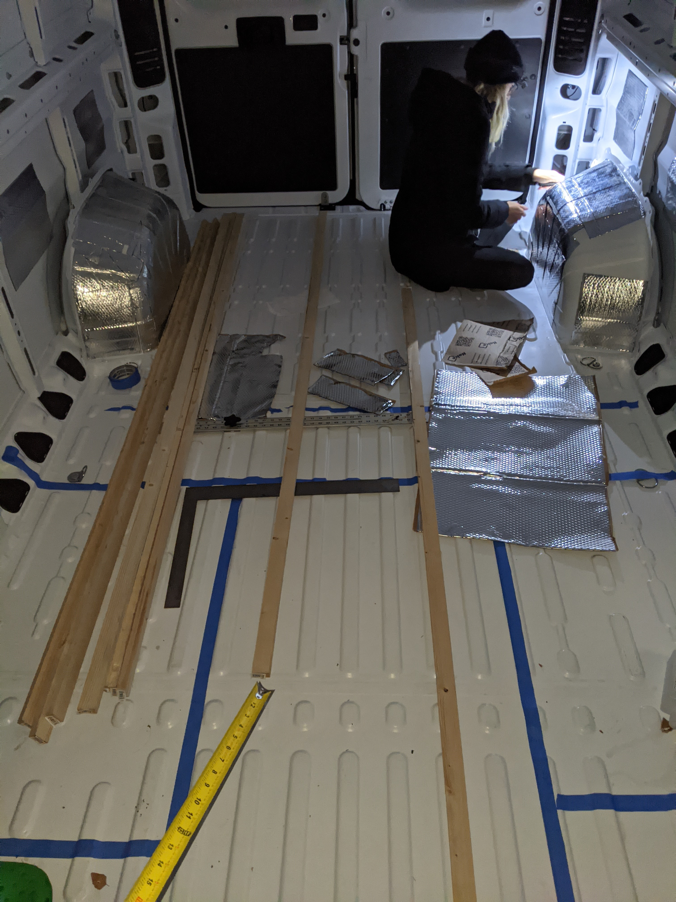
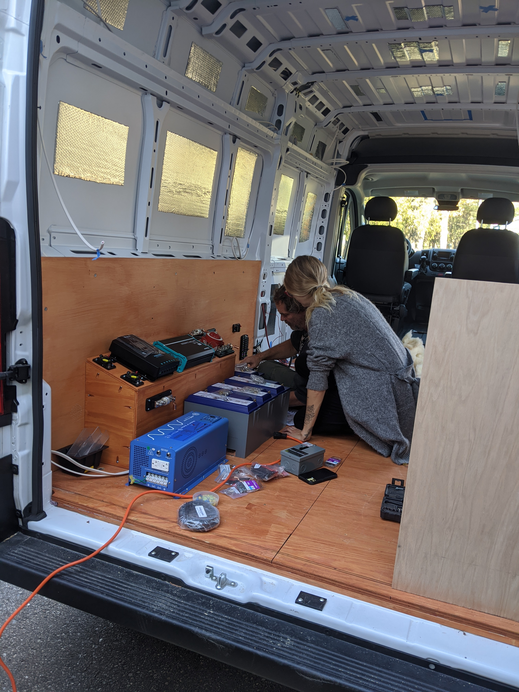
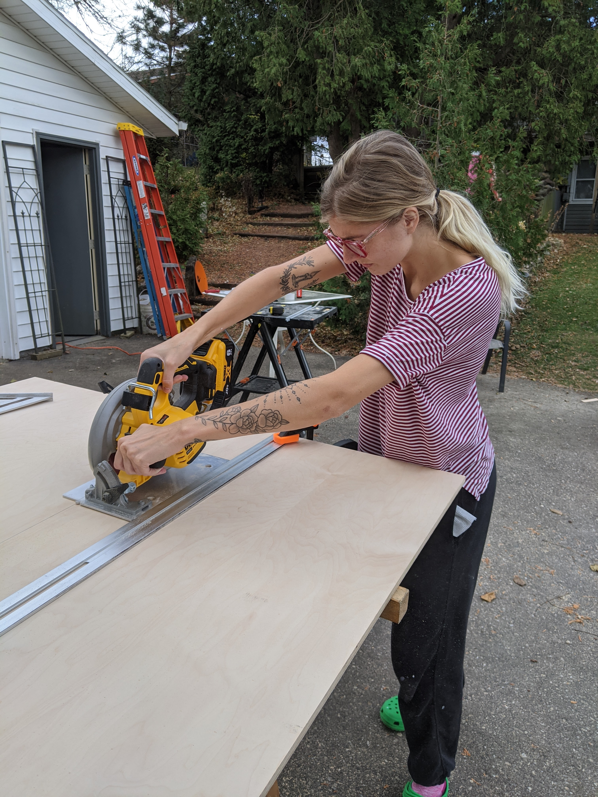
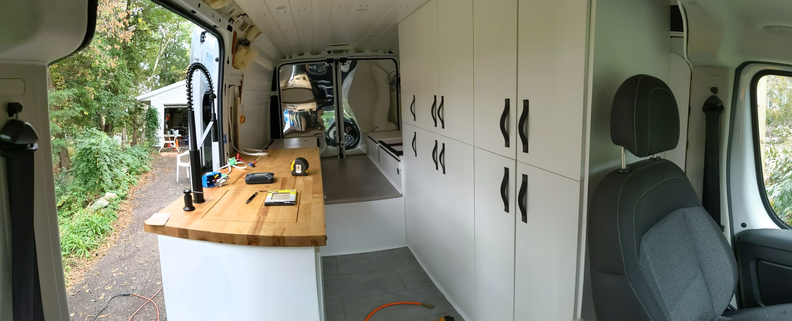
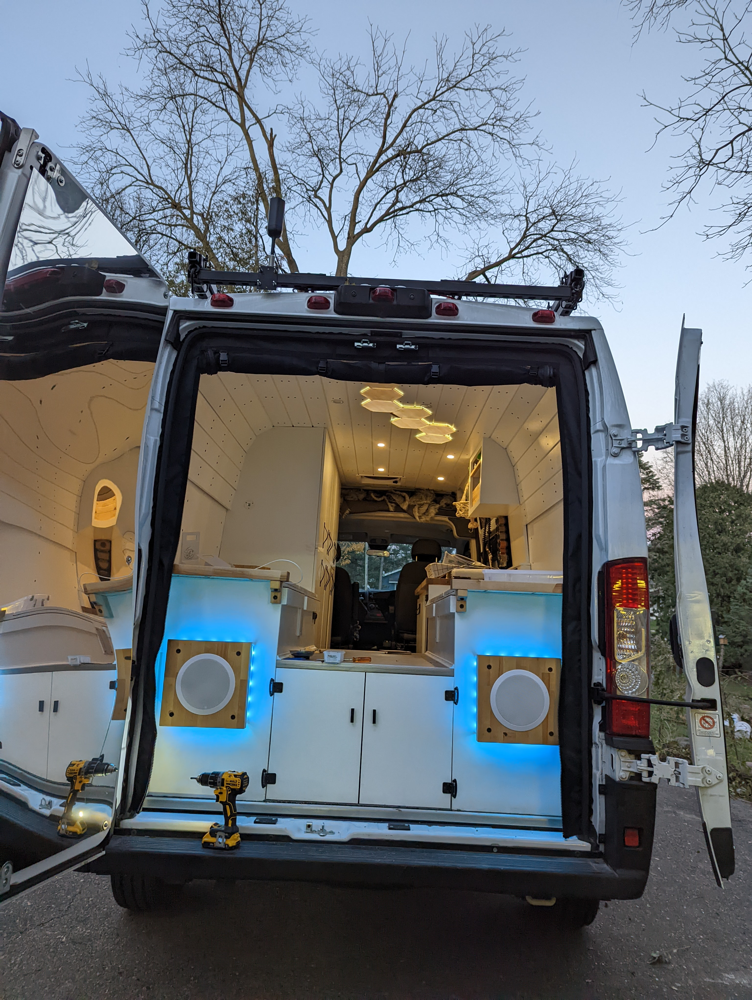
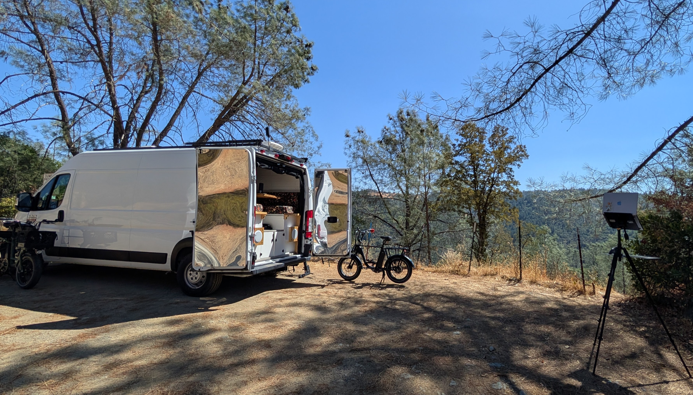
Favorite Books
Pull something off the stack.